Reusable interface examples
The repeating work gets done.
These examples use the portable Inter family and supplied CSS tokens. Text remains readable in dark and light layouts.
System connected
Tell us what your team repeats.
Describe the handoffs, copy-and-paste work, and disconnected tools.
System connected
Systems you own.
A clear implementation, documented workflows, and the access to run them.
Light-surface link blue: #0079AA. Logo centre and action fill: #02A1E1.